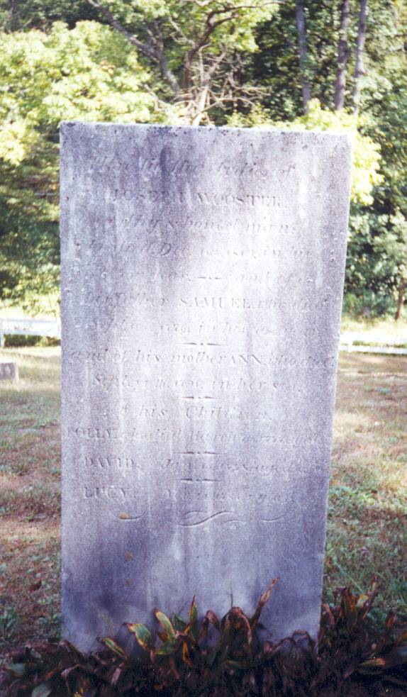

|  |
Joseph Wooster,
died Dec. 18, 1819,
in his 76th year.
Samuel
Wooster,
his father,
died Sept. 16, 1776,
in his 70th year.
Ann Wooster,
his mother,
died Sept. 14, 1791,
in her 81st year.
His
children
Dolly, died
Mar. 7, 1777, aged 3.
David, died
Jan. 15, 1778, aged 3 years.
Lucy, died
Nov. 20, 1783, aged 1 year.
(Excerpt from
History Of Oxford,
by W. C. Sharpe,
page
84.)
NOTE:
Daughter is recorded as Dolly on this page, but recorded
elsewhere as Polly. The letter "P" is clear on the stone shown below.
|